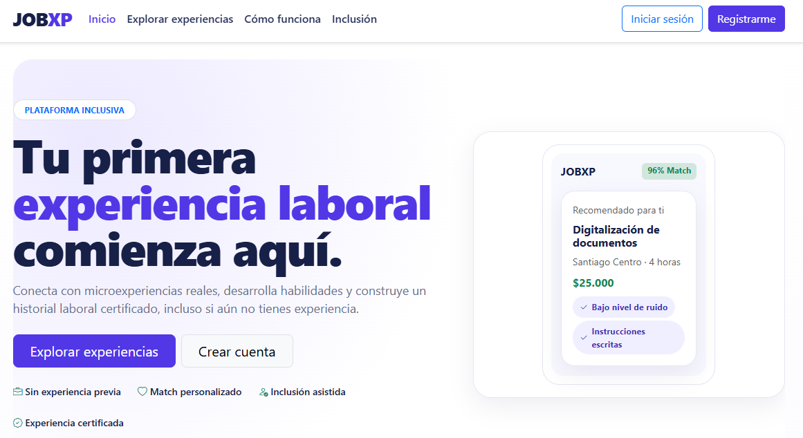

Sobre mi
Desarrollo web front-end junior que
se concentra en algo hasta conseguirlo.
Apasionado de la programación desde corta edad, de la tecnologia,
de aprender cada día mas y del volleyball en mis tiempos libres.
Proyecto principal
JobXP
Una página web de microexperiencias laborales que facilita el encuentro entre talento joven y negocios locales, con un enfoque transparente, accesible y regulado. La plataforma busca que una primera experiencia laboral sea más fácil de encontrar, comprender y aprovechar, permitiendo que los jóvenes conozcan oportunidades, desarrollen habilidades y construyan antecedentes que les ayuden en futuras postulaciones. Al mismo tiempo, las empresas pueden encontrar personas interesadas en aprender y participar en experiencias acotadas, generando un vínculo inicial que puede transformarse en nuevas oportunidades laborales.
Click aquí para mas información